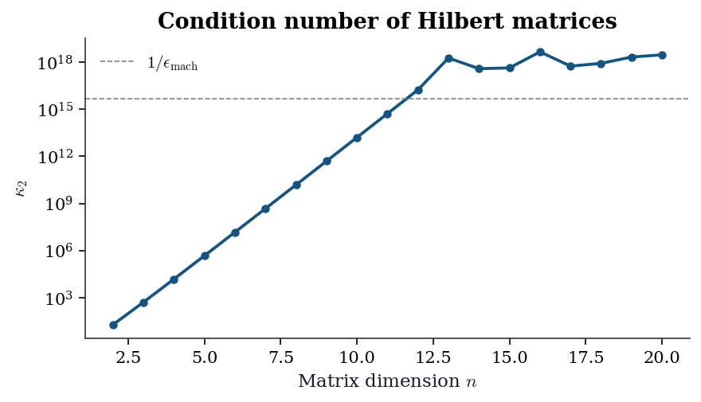
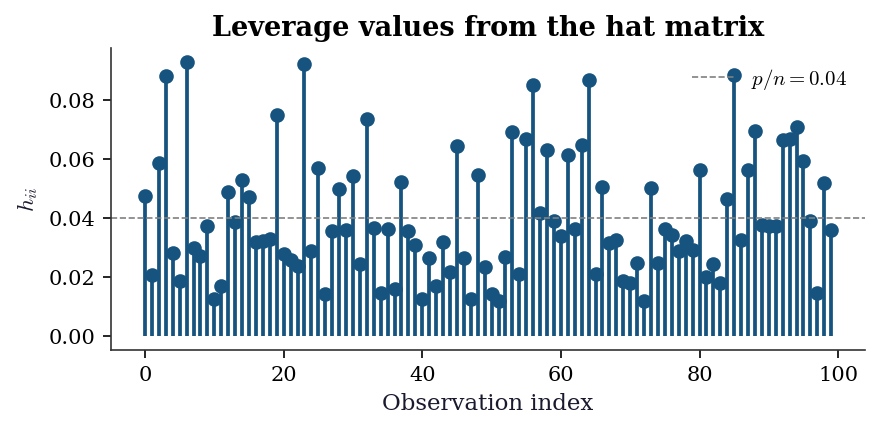

import numpy as np
from scipy import linalg
import matplotlib.pyplot as plt
plt.style.use('assets/book.mplstyle')
rng = np.random.default_rng(42)Appendix C — Matrix Algebra for Statistics
This appendix collects the matrix algebra results used throughout the book. It is a reference, not a textbook chapter — each result states the fact, gives enough intuition to see why it holds, shows the corresponding NumPy / SciPy call, and points to the chapters where it matters. A reader who already knows these results can skip ahead and return when a chapter cites a specific section.
Positive Definiteness
A symmetric matrix \(\mathbf{A} \in \mathbb{R}^{n \times n}\) is positive definite (PD) if any of the following equivalent conditions holds:
- \(\mathbf{x}^\top \mathbf{A} \mathbf{x} > 0\) for every nonzero \(\mathbf{x} \in \mathbb{R}^n\).
- Every eigenvalue of \(\mathbf{A}\) is strictly positive.
- The Cholesky factorisation \(\mathbf{A} = \mathbf{L}\mathbf{L}^\top\) exists, where \(\mathbf{L}\) is lower-triangular with positive diagonal entries.
Replace “\(> 0\)” with “\(\geq 0\)” and “strictly positive” with “nonnegative” to get the definition of positive semi-definite (PSD).
Where it arises.
- Every covariance matrix is PSD. A valid covariance matrix is PD when no variable is a deterministic linear combination of the others.
- The Hessian \(\nabla^2 f(\mathbf{x})\) at a local minimum is PSD (Ch. 2). Quasi-Newton methods maintain PD Hessian approximations so that the search direction is always a descent direction.
- The Fisher information matrix \(\mathcal{I}(\boldsymbol{\theta})\) is PSD; it is PD when the model is identifiable (Ch. 10).
Testing positive definiteness in code. Two practical strategies:
- Cholesky — try / except. Fastest for large matrices, and the factorisation itself is reusable.
- Eigenvalue check. More informative when you need the margin by which PD holds or fails.
A_pd = np.array([[4.0, 2.0], [2.0, 3.0]])
A_psd = np.array([[1.0, 1.0], [1.0, 1.0]]) # rank 1, PSD not PD
def is_pd_cholesky(A):
"""Test positive definiteness via Cholesky."""
try:
linalg.cholesky(A, lower=True)
return True
except linalg.LinAlgError:
return False
def is_pd_eig(A, tol=1e-10):
"""Test positive definiteness via eigenvalues."""
eigvals = linalg.eigvalsh(A)
return bool(np.all(eigvals > tol)), eigvals
print("PD matrix (Cholesky):", is_pd_cholesky(A_pd))
print("PSD matrix (Cholesky):", is_pd_cholesky(A_psd))
flag, vals = is_pd_eig(A_pd)
print(f"PD matrix eigenvalues: {vals.round(4)}, PD={flag}")
flag, vals = is_pd_eig(A_psd)
print(f"PSD matrix eigenvalues: {vals.round(4)}, PD={flag}")PD matrix (Cholesky): True
PSD matrix (Cholesky): False
PD matrix eigenvalues: [1.4384 5.5616], PD=True
PSD matrix eigenvalues: [0. 2.], PD=FalseThe Cholesky test runs in \(O(n^3/3)\) flops — half the cost of an LU factorisation — and is the preferred test in library code. The eigenvalue test costs a full \(O(n^3)\) but reveals how close the matrix is to singularity: the ratio \(\lambda_{\max} / \lambda_{\min}\) is the 2-norm condition number (see ?sec-norms below).
Near-PSD matrices. In practice, covariance estimates are often almost positive semi-definite: a few eigenvalues are tiny negative numbers due to floating-point arithmetic or numerical optimisation. The standard fix is to clip negative eigenvalues to zero (or a small positive value) and reconstruct:
# Repair a near-PSD matrix
A_noisy = np.array([
[1.0, 0.9, 0.8],
[0.9, 1.0, 0.9],
[0.8, 0.9, 1.0],
])
# Simulate numerical noise making it not quite PD
A_noisy[0, 2] = 0.81
A_noisy[2, 0] = 0.81
eigvals_raw, Q = linalg.eigh(A_noisy)
print(f"Raw eigenvalues: {eigvals_raw.round(6)}")
# Clip to positive
eigvals_clipped = np.maximum(eigvals_raw, 1e-10)
A_fixed = Q @ np.diag(eigvals_clipped) @ Q.T
print(f"Fixed eigenvalues: "
f"{linalg.eigvalsh(A_fixed).round(6)}")
print(f"Now PD: {is_pd_cholesky(A_fixed)}")Raw eigenvalues: [0.069326 0.19 2.740674]
Fixed eigenvalues: [0.069326 0.19 2.740674]
Now PD: TrueThis arises frequently in Ch. 14 (mixed model covariance estimation) and Ch. 17 (VAR residual covariance matrices), where iterative algorithms can produce matrices that are numerically but not algebraically indefinite.
Cholesky Decomposition
Every positive definite matrix \(\mathbf{A}\) admits a unique factorisation
\[ \mathbf{A} = \mathbf{L} \mathbf{L}^\top, \]
where \(\mathbf{L}\) is lower-triangular with positive diagonal entries. The factorisation requires \(n^3/3\) flops, roughly half the cost of the LU factorisation (\(2n^3/3\)), because symmetry halves the work.
Why it matters.
- Sampling multivariate normals. To draw \(\mathbf{z} \sim \mathcal{N}(\boldsymbol{\mu}, \boldsymbol{\Sigma})\), compute \(\mathbf{L} = \text{chol}(\boldsymbol{\Sigma})\), draw \(\mathbf{u} \sim \mathcal{N}(\mathbf{0}, \mathbf{I})\), and set \(\mathbf{z} = \boldsymbol{\mu} + \mathbf{L}\mathbf{u}\). Used in Ch. 7 (Monte Carlo) and Ch. 8 (MCMC proposals).
- Solving PD linear systems. Given \(\mathbf{A}\mathbf{x} = \mathbf{b}\) with PD \(\mathbf{A}\), factor once and solve the two triangular systems \(\mathbf{L}\mathbf{y} = \mathbf{b}\), \(\mathbf{L}^\top \mathbf{x} = \mathbf{y}\) in \(O(n^2)\) each. Used whenever the book solves a normal-equation system.
- Log-determinant. \(\log|\mathbf{A}| = 2 \sum_i \log L_{ii}\), which avoids overflow that a raw determinant can produce. Used in Gaussian log-likelihoods (Ch. 14, Ch. 16).
Sigma = np.array([
[2.0, 0.8, 0.3],
[0.8, 1.5, 0.5],
[0.3, 0.5, 1.0],
])
L = linalg.cholesky(Sigma, lower=True)
print("L =")
print(L.round(4))
print("Reconstruction error:",
np.max(np.abs(L @ L.T - Sigma)))
# Sampling multivariate normals via Cholesky
mu = np.array([1.0, 2.0, 3.0])
u = rng.standard_normal(size=3)
z = mu + L @ u
print(f"Sample from N(mu, Sigma): {z.round(4)}")
# Log-determinant via Cholesky
logdet_chol = 2.0 * np.sum(np.log(np.diag(L)))
_, logdet_direct = np.linalg.slogdet(Sigma)
print(f"log|Sigma| via Cholesky: {logdet_chol:.6f}")
print(f"log|Sigma| via slogdet: {logdet_direct:.6f}")L =
[[1.4142 0. 0. ]
[0.5657 1.0863 0. ]
[0.2121 0.3498 0.9125]]
Reconstruction error: 4.440892098500626e-16
Sample from N(mu, Sigma): [1.4309 1.0427 3.3856]
log|Sigma| via Cholesky: 0.675492
log|Sigma| via slogdet: 0.675492# Solving Ax = b via Cholesky: factor once, solve twice
b = np.array([1.0, 2.0, 3.0])
x_chol = linalg.cho_solve(
(L, True), b
)
x_direct = linalg.solve(Sigma, b)
print("Cholesky solve error:",
np.max(np.abs(x_chol - x_direct)))Cholesky solve error: 4.440892098500626e-16Singular Value Decomposition
Every matrix \(\mathbf{A} \in \mathbb{R}^{m \times n}\) has a factorisation
\[ \mathbf{A} = \mathbf{U} \boldsymbol{\Sigma} \mathbf{V}^\top, \]
where \(\mathbf{U} \in \mathbb{R}^{m \times m}\) and \(\mathbf{V} \in \mathbb{R}^{n \times n}\) are orthogonal and \(\boldsymbol{\Sigma}\) is \(m \times n\) diagonal with nonnegative entries \(\sigma_1 \geq \sigma_2 \geq \cdots \geq 0\) (the singular values).
The thin (or economy) SVD keeps only the first \(\min(m,n)\) columns of \(\mathbf{U}\) and \(\mathbf{V}\), which is all that is needed for most statistical applications. In scipy.linalg.svd, set full_matrices=False to get the thin form; the default full_matrices=True computes the full orthogonal matrices, which is wasteful when \(m \gg n\) (the common case in statistics, where we have many more observations than variables).
Relationship between SVD and eigendecomposition. For any matrix \(\mathbf{A}\), the right singular vectors are the eigenvectors of \(\mathbf{A}^\top \mathbf{A}\) and the left singular vectors are the eigenvectors of \(\mathbf{A}\mathbf{A}^\top\). The squared singular values are the eigenvalues: \(\sigma_i^2 = \lambda_i(\mathbf{A}^\top \mathbf{A})\). This connection is the bridge between PCA via eigendecomposition of the covariance matrix and PCA via SVD of the centred data matrix — numerically, the SVD route is more stable because it avoids forming the \(p \times p\) matrix \(\mathbf{X}^\top\mathbf{X}\), which squares the condition number.
Statistical uses.
| Application | How the SVD enters | Chapter |
|---|---|---|
| PCA | Left singular vectors of the centred data matrix are the principal components; singular values give the explained variance | Ch. 19 |
| Pseudoinverse | \(\mathbf{A}^+ = \mathbf{V} \boldsymbol{\Sigma}^+ \mathbf{U}^\top\) | Ch. 11 |
| Rank determination | Rank \(= \#\{\sigma_i > \epsilon\}\) for a chosen tolerance \(\epsilon\) | Ch. 20 |
| Condition number | \(\kappa(\mathbf{A}) = \sigma_1 / \sigma_{\min}\) | Ch. 2, 11 |
| Low-rank approximation | Eckart–Young theorem: best rank-\(k\) approximation in Frobenius norm truncates at \(\sigma_k\) | Ch. 19 |
# Generate a rank-2 matrix in R^{4x3}
A = rng.standard_normal((4, 3))
A[:, 2] = A[:, 0] + A[:, 1] # make rank 2
U, s, Vt = linalg.svd(A, full_matrices=False)
print(f"Singular values: {s.round(6)}")
print(f"Numerical rank: {np.sum(s > 1e-10)}")
print(f"Condition number: {s[0] / s[1]:.4f}")
# Pseudoinverse via SVD
s_inv = np.where(s > 1e-10, 1.0 / s, 0.0)
A_pinv_svd = (Vt.T * s_inv) @ U.T
A_pinv_lib = linalg.pinv(A)
print("Pseudoinverse error:",
np.max(np.abs(A_pinv_svd - A_pinv_lib)))Singular values: [2.999085 1.034523 0. ]
Numerical rank: 2
Condition number: 2.8990
Pseudoinverse error: 5.551115123125783e-17# PCA via SVD on a centred data matrix
X = rng.standard_normal((200, 4))
X_centred = X - X.mean(axis=0)
U, s, Vt = linalg.svd(X_centred, full_matrices=False)
explained_var = s**2 / (X.shape[0] - 1)
pct = 100 * explained_var / explained_var.sum()
print("Explained variance %:", pct.round(2))
print("Loadings (first 2 PCs):")
print(Vt[:2, :].round(4))Explained variance %: [28.59 27.23 24.27 19.91]
Loadings (first 2 PCs):
[[-0.5003 -0.3886 0.4529 0.6273]
[-0.2676 0.5291 0.7028 -0.3931]]Eigendecomposition
A square matrix \(\mathbf{A} \in \mathbb{R}^{n \times n}\) can be decomposed as
\[ \mathbf{A} = \mathbf{Q} \boldsymbol{\Lambda} \mathbf{Q}^{-1}, \]
where \(\boldsymbol{\Lambda} = \text{diag}(\lambda_1, \dots, \lambda_n)\) and the columns of \(\mathbf{Q}\) are the corresponding eigenvectors. For a symmetric matrix the eigenvalues are real, the eigenvectors are orthogonal, and \(\mathbf{Q}^{-1} = \mathbf{Q}^\top\) — this is the spectral theorem.
eigh vs eig. For symmetric matrices, always use scipy.linalg.eigh, which
- exploits symmetry for roughly half the flop count,
- guarantees real eigenvalues and orthonormal eigenvectors,
- returns eigenvalues in ascending order.
scipy.linalg.eig handles the general (possibly non-symmetric) case and returns complex eigenvalues when they exist — needed, for instance, when checking stability of a VAR companion matrix (Ch. 17), where eigenvalues inside the unit circle imply stationarity.
# Symmetric case — use eigh
S = np.array([[5.0, 2.0, 1.0],
[2.0, 4.0, 2.0],
[1.0, 2.0, 3.0]])
eigvals, Q = linalg.eigh(S)
print(f"Eigenvalues (eigh): {eigvals.round(4)}")
print(f"Orthogonality check: "
f"{np.max(np.abs(Q.T @ Q - np.eye(3))):.2e}")
print(f"Reconstruction error: "
f"{np.max(np.abs(Q @ np.diag(eigvals) @ Q.T - S)):.2e}")
# General case — VAR companion matrix stability check
A_companion = np.array([[0.5, 0.3],
[0.1, 0.4]])
eigvals_gen = linalg.eigvals(A_companion)
print(f"\nCompanion eigenvalues: {eigvals_gen.round(4)}")
print(f"Moduli: {np.abs(eigvals_gen).round(4)}")
print(f"Stationary (all |λ| < 1): "
f"{bool(np.all(np.abs(eigvals_gen) < 1))}")Eigenvalues (eigh): [1.36 3.1354 7.5047]
Orthogonality check: 4.44e-16
Reconstruction error: 3.11e-15
Companion eigenvalues: [0.6303+0.j 0.2697+0.j]
Moduli: [0.6303 0.2697]
Stationary (all |λ| < 1): TrueMatrix powers via eigendecomposition. If \(\mathbf{A} = \mathbf{Q} \boldsymbol{\Lambda}\mathbf{Q}^\top\) (symmetric), then \(\mathbf{A}^k = \mathbf{Q}\boldsymbol{\Lambda}^k\mathbf{Q}^\top\) and \(\mathbf{A}^{-1} = \mathbf{Q}\boldsymbol{\Lambda}^{-1}\mathbf{Q}^\top\). More generally, for any function \(g\) defined on the eigenvalues, \(g(\mathbf{A}) = \mathbf{Q}\,\text{diag}(g(\lambda_1), \dots, g(\lambda_n))\,\mathbf{Q}^\top\). This spectral mapping is used in Ch. 14 to compute \(\boldsymbol{\Sigma}^{1/2}\) (the matrix square root of a covariance matrix) and in Ch. 16 for the matrix exponential in continuous-time state-space models.
Connections across the book.
- PCA (Ch. 19): Eigendecomposition of the sample covariance matrix \(\hat{\boldsymbol{\Sigma}} = \frac{1}{n-1}\mathbf{X}_c^\top \mathbf{X}_c\) yields the principal components. The SVD of \(\mathbf{X}_c\) is numerically more stable but gives the same subspace.
- MANOVA (Ch. 19): Test statistics are functions of eigenvalues of \(\mathbf{W}^{-1}\mathbf{B}\), the ratio of between-group to within-group scatter.
- VAR stability (Ch. 17): A VAR(\(p\)) is stationary if and only if all eigenvalues of the companion matrix lie strictly inside the unit circle.
- Spectral radius. The spectral radius \(\rho(\mathbf{A}) = \max_i |\lambda_i|\) determines convergence of iterative methods and the stability of dynamic systems. Used in Ch. 15 (AR stationarity conditions) and Ch. 17 (VAR forecasting).
Matrix Calculus
Matrix calculus underlies every optimisation and maximum-likelihood derivation in the book. The convention throughout is the numerator layout: if \(f : \mathbb{R}^n \to \mathbb{R}\), then the gradient \(\nabla f(\mathbf{x}) = \partial f / \partial \mathbf{x}\) is a column vector in \(\mathbb{R}^n\).
Key scalar-by-vector results
| Function | Gradient | Used in |
|---|---|---|
| \(f(\mathbf{x}) = \mathbf{a}^\top \mathbf{x}\) | \(\nabla f = \mathbf{a}\) | Linear terms in log-likelihoods |
| \(f(\mathbf{x}) = \mathbf{x}^\top \mathbf{A} \mathbf{x}\), \(\mathbf{A}\) symmetric | \(\nabla f = 2\mathbf{A}\mathbf{x}\) | Quadratic forms (Ch. 2, 11) |
| \(f(\mathbf{x}) = \mathbf{x}^\top \mathbf{A} \mathbf{x}\), general \(\mathbf{A}\) | \(\nabla f = (\mathbf{A} + \mathbf{A}^\top)\mathbf{x}\) | |
| \(f(\boldsymbol{\beta}) = \|\mathbf{y} - \mathbf{X}\boldsymbol{\beta}\|^2\) | \(\nabla f = -2\mathbf{X}^\top(\mathbf{y} - \mathbf{X}\boldsymbol{\beta})\) | Normal equations (Ch. 11) |
The Hessian of a scalar function is the matrix of second partial derivatives: \([\nabla^2 f]_{ij} = \partial^2 f / \partial x_i \partial x_j\). For the quadratic form \(f(\mathbf{x}) = \mathbf{x}^\top \mathbf{A} \mathbf{x}\) with symmetric \(\mathbf{A}\), the Hessian is \(\nabla^2 f = 2\mathbf{A}\) — constant, which is why quadratic functions are the ideal case for Newton’s method (Ch. 2).
Chain rule for vector functions. If \(f(\mathbf{x}) = g(\mathbf{h}(\mathbf{x}))\) where \(\mathbf{h} : \mathbb{R}^n \to \mathbb{R}^m\) and \(g : \mathbb{R}^m \to \mathbb{R}\), then
\[ \nabla_{\mathbf{x}} f = \mathbf{J}_h^\top \nabla_{\mathbf{h}} g, \]
where \(\mathbf{J}_h\) is the \(m \times n\) Jacobian of \(\mathbf{h}\). This is the matrix-calculus form of the chain rule and is used throughout Ch. 2 (optimisation) whenever the objective is a composition of simpler functions. The Gauss–Newton method (Ch. 6) is a direct application: the Hessian of \(\|\mathbf{r}(\boldsymbol{\theta})\|^2\) is approximated as \(2\mathbf{J}^\top\mathbf{J}\), dropping the second-derivative terms.
Second-order expansion. The Taylor expansion of \(f\) about \(\mathbf{x}_0\) gives
\[ f(\mathbf{x}) \approx f(\mathbf{x}_0) + \nabla f(\mathbf{x}_0)^\top (\mathbf{x} - \mathbf{x}_0) + \tfrac{1}{2}(\mathbf{x} - \mathbf{x}_0)^\top \nabla^2 f(\mathbf{x}_0)(\mathbf{x} - \mathbf{x}_0). \]
Setting the gradient of this quadratic to zero gives Newton’s step \(\mathbf{x} - \mathbf{x}_0 = -[\nabla^2 f(\mathbf{x}_0)]^{-1} \nabla f(\mathbf{x}_0)\) — the foundation of all Newton-type methods in Ch. 2.
Key matrix-by-matrix results
These appear in likelihood derivations where the parameter is a matrix (e.g., a covariance matrix):
| Function | Derivative | Used in |
|---|---|---|
| \(f(\mathbf{A}) = \text{tr}(\mathbf{A}\mathbf{B})\) | \(\partial f / \partial \mathbf{A} = \mathbf{B}^\top\) | REML (Ch. 14) |
| \(f(\mathbf{A}) = \log|\mathbf{A}|\) | \(\partial f / \partial \mathbf{A} = \mathbf{A}^{-\top} = (\mathbf{A}^{-1})^\top\) | Gaussian log-likelihood |
| \(f(\mathbf{A}) = \log|\mathbf{A}|\), \(\mathbf{A}\) symmetric | \(\partial f / \partial \mathbf{A} = \mathbf{A}^{-1}\) | Covariance estimation |
| \(f(\mathbf{A}) = \mathbf{a}^\top \mathbf{A}^{-1} \mathbf{b}\) | \(\partial f / \partial \mathbf{A} = -\mathbf{A}^{-\top}\mathbf{a}\mathbf{b}^\top \mathbf{A}^{-\top}\) | Score functions (Ch. 10) |
# Verify gradient of quadratic form numerically
A_sym = np.array([[3.0, 1.0], [1.0, 2.0]])
x = np.array([1.0, 2.0])
def quad_form(x, A):
return x @ A @ x
# Analytic gradient: 2*A*x
grad_analytic = 2 * A_sym @ x
# Numerical gradient via finite differences
eps = 1e-7
grad_numerical = np.zeros_like(x)
for i in range(len(x)):
x_plus = x.copy()
x_plus[i] += eps
x_minus = x.copy()
x_minus[i] -= eps
grad_numerical[i] = (
(quad_form(x_plus, A_sym)
- quad_form(x_minus, A_sym))
/ (2 * eps)
)
print(f"Analytic gradient: {grad_analytic}")
print(f"Numerical gradient: {grad_numerical.round(6)}")
print(f"Error: {np.max(np.abs(grad_analytic - grad_numerical)):.2e}")Analytic gradient: [10. 10.]
Numerical gradient: [10. 10.]
Error: 1.03e-08# Verify d/dA log|A| = A^{-1} for symmetric A
A = np.array([[4.0, 1.0], [1.0, 3.0]])
# Analytic derivative
dlogdet_analytic = linalg.inv(A)
# Numerical derivative (element-wise)
eps = 1e-7
dlogdet_numerical = np.zeros_like(A)
for i in range(A.shape[0]):
for j in range(A.shape[1]):
A_plus = A.copy()
A_plus[i, j] += eps
A_minus = A.copy()
A_minus[i, j] -= eps
_, ld_plus = np.linalg.slogdet(A_plus)
_, ld_minus = np.linalg.slogdet(A_minus)
dlogdet_numerical[i, j] = (
(ld_plus - ld_minus) / (2 * eps)
)
print("Analytic d(log|A|)/dA:")
print(dlogdet_analytic.round(6))
print("Numerical:")
print(dlogdet_numerical.round(6))
print(f"Max error: "
f"{np.max(np.abs(dlogdet_analytic - dlogdet_numerical)):.2e}")Analytic d(log|A|)/dA:
[[ 0.272727 -0.090909]
[-0.090909 0.363636]]
Numerical:
[[ 0.272727 -0.090909]
[-0.090909 0.363636]]
Max error: 1.83e-09Sherman–Morrison–Woodbury Identity
The Woodbury identity gives the inverse of a matrix after a low-rank perturbation:
\[ (\mathbf{A} + \mathbf{U}\mathbf{C}\mathbf{V})^{-1} = \mathbf{A}^{-1} - \mathbf{A}^{-1}\mathbf{U} (\mathbf{C}^{-1} + \mathbf{V}\mathbf{A}^{-1}\mathbf{U})^{-1} \mathbf{V}\mathbf{A}^{-1}. \]
The important special case is the Sherman–Morrison formula for a rank-1 update (\(\mathbf{U} = \mathbf{u}\), \(\mathbf{V} = \mathbf{v}^\top\), \(\mathbf{C} = 1\)):
\[ (\mathbf{A} + \mathbf{u}\mathbf{v}^\top)^{-1} = \mathbf{A}^{-1} - \frac{\mathbf{A}^{-1}\mathbf{u}\mathbf{v}^\top\mathbf{A}^{-1}} {1 + \mathbf{v}^\top\mathbf{A}^{-1}\mathbf{u}}. \]
Where it matters.
- BFGS quasi-Newton update (Ch. 2). Each BFGS iteration updates an \(n \times n\) inverse Hessian approximation with a rank-2 correction, applied via two successive Sherman–Morrison steps. This keeps the per-iteration cost at \(O(n^2)\) rather than \(O(n^3)\).
- Cook’s distance (Ch. 11). The leave-one-out influence of observation \(i\) on \(\hat{\boldsymbol{\beta}}\) can be computed without refitting the model by applying the Sherman–Morrison formula to \((\mathbf{X}^\top \mathbf{X} - \mathbf{x}_i \mathbf{x}_i^\top)^{-1}\). This is why the hat matrix entries \(h_{ii}\) appear in the Cook’s \(D\) formula.
n = 4
A = rng.standard_normal((n, n))
A = A @ A.T + np.eye(n) # make PD
u = rng.standard_normal(n)
v = rng.standard_normal(n)
# Direct inverse of rank-1 update
B = A + np.outer(u, v)
B_inv_direct = linalg.inv(B)
# Sherman-Morrison formula
A_inv = linalg.inv(A)
numerator = np.outer(A_inv @ u, v @ A_inv)
denominator = 1.0 + v @ A_inv @ u
B_inv_sm = A_inv - numerator / denominator
print(f"Direct inverse vs Sherman-Morrison:")
print(f"Max error: "
f"{np.max(np.abs(B_inv_direct - B_inv_sm)):.2e}")Direct inverse vs Sherman-Morrison:
Max error: 8.53e-14# Cost comparison: Woodbury vs direct inverse
# for rank-k update with k << n
from time import perf_counter
n = 500
k = 5
A = rng.standard_normal((n, n))
A = A @ A.T + np.eye(n)
U = rng.standard_normal((n, k))
C = np.eye(k)
V = rng.standard_normal((k, n))
# Direct inverse
t0 = perf_counter()
for _ in range(10):
_ = linalg.inv(A + U @ C @ V)
t_direct = (perf_counter() - t0) / 10
# Woodbury
A_inv = linalg.inv(A)
t0 = perf_counter()
for _ in range(10):
AiU = A_inv @ U
mid = linalg.inv(C + V @ AiU)
_ = A_inv - AiU @ mid @ (V @ A_inv)
t_woodbury = (perf_counter() - t0) / 10
print(f"n={n}, rank-{k} update:")
print(f" Direct inverse: {t_direct*1e3:.1f} ms")
print(f" Woodbury: {t_woodbury*1e3:.1f} ms")
print(f" Speedup: {t_direct/t_woodbury:.1f}x")n=500, rank-5 update:
Direct inverse: 2.0 ms
Woodbury: 0.3 ms
Speedup: 6.0xThe savings grow as \(k/n\) shrinks. When \(\mathbf{A}^{-1}\) is already available (as in the BFGS iteration), the Woodbury update costs \(O(n^2 k)\) versus \(O(n^3)\) for a fresh inverse.
Block Matrix Inversion and Schur Complement
Consider a conformably partitioned matrix
\[ \mathbf{M} = \begin{bmatrix} \mathbf{A} & \mathbf{B} \\ \mathbf{C} & \mathbf{D} \end{bmatrix}, \]
where \(\mathbf{A}\) is \(p \times p\) and \(\mathbf{D}\) is \(q \times q\). If \(\mathbf{A}\) is invertible, the Schur complement of \(\mathbf{A}\) in \(\mathbf{M}\) is
\[ \mathbf{S} = \mathbf{D} - \mathbf{C}\mathbf{A}^{-1}\mathbf{B}. \]
The block inverse formula is:
\[ \mathbf{M}^{-1} = \begin{bmatrix} \mathbf{A}^{-1} + \mathbf{A}^{-1}\mathbf{B}\mathbf{S}^{-1}\mathbf{C}\mathbf{A}^{-1} & -\mathbf{A}^{-1}\mathbf{B}\mathbf{S}^{-1} \\ -\mathbf{S}^{-1}\mathbf{C}\mathbf{A}^{-1} & \mathbf{S}^{-1} \end{bmatrix}. \]
Where it matters.
- Mixed models (Ch. 14). The marginal log-likelihood of \(\mathbf{y}\) in a linear mixed model involves inverting \(\mathbf{V} = \mathbf{Z}\mathbf{G}\mathbf{Z}^\top + \mathbf{R}\), a matrix whose block structure makes the Schur complement the natural tool. The REML restricted log-likelihood is derived by partitioning the joint precision of \((\boldsymbol{\beta}, \mathbf{b})\).
- Kalman filter (Ch. 16). The innovation covariance and Kalman gain both involve Schur-complement-type operations on the partitioned joint distribution of the state and observation.
- Determinant formula. \(|\mathbf{M}| = |\mathbf{A}| \cdot |\mathbf{S}|\). This factorisation avoids computing the determinant of the full matrix and is used in profile-likelihood derivations.
p, q = 3, 2
A = rng.standard_normal((p, p))
A = A @ A.T + np.eye(p)
B = rng.standard_normal((p, q))
C = rng.standard_normal((q, p))
D = rng.standard_normal((q, q))
D = D @ D.T + np.eye(q)
# Build full matrix
M = np.block([[A, B], [C, D]])
# Direct inverse
M_inv_direct = linalg.inv(M)
# Block inverse via Schur complement
A_inv = linalg.inv(A)
S = D - C @ A_inv @ B
S_inv = linalg.inv(S)
top_left = A_inv + A_inv @ B @ S_inv @ C @ A_inv
top_right = -A_inv @ B @ S_inv
bot_left = -S_inv @ C @ A_inv
bot_right = S_inv
M_inv_block = np.block([
[top_left, top_right],
[bot_left, bot_right],
])
print(f"Block inverse error: "
f"{np.max(np.abs(M_inv_direct - M_inv_block)):.2e}")
# Determinant via Schur complement
det_full = linalg.det(M)
det_schur = linalg.det(A) * linalg.det(S)
print(f"det(M) direct: {det_full:.6f}")
print(f"det(A) * det(S): {det_schur:.6f}")
print(f"Determinant error: {abs(det_full - det_schur):.2e}")Block inverse error: 5.55e-17
det(M) direct: 236.922333
det(A) * det(S): 236.922333
Determinant error: 5.68e-14Kronecker Products
The Kronecker product of \(\mathbf{A} \in \mathbb{R}^{m \times n}\) and \(\mathbf{B} \in \mathbb{R}^{p \times q}\) is the \(mp \times nq\) block matrix
\[ \mathbf{A} \otimes \mathbf{B} = \begin{bmatrix} a_{11}\mathbf{B} & \cdots & a_{1n}\mathbf{B} \\ \vdots & \ddots & \vdots \\ a_{m1}\mathbf{B} & \cdots & a_{mn}\mathbf{B} \end{bmatrix}. \]
Key properties:
- \((\mathbf{A} \otimes \mathbf{B})^{-1} = \mathbf{A}^{-1} \otimes \mathbf{B}^{-1}\)
- \((\mathbf{A} \otimes \mathbf{B})(\mathbf{C} \otimes \mathbf{D}) = (\mathbf{AC}) \otimes (\mathbf{BD})\)
- Eigenvalues of \(\mathbf{A} \otimes \mathbf{B}\) are all products \(\lambda_i(\mathbf{A}) \cdot \lambda_j(\mathbf{B})\)
- \(\text{det}(\mathbf{A} \otimes \mathbf{B}) = (\text{det}\,\mathbf{A})^p \cdot (\text{det}\,\mathbf{B})^n\) for \(\mathbf{A}\) \(n \times n\), \(\mathbf{B}\) \(p \times p\)
The vec operator and the fundamental identity
The vec operator stacks the columns of a matrix into a single vector: \(\text{vec}(\mathbf{X})\) for \(\mathbf{X} \in \mathbb{R}^{m \times n}\) is an \(mn \times 1\) vector. The central identity is:
\[ \text{vec}(\mathbf{A}\mathbf{X}\mathbf{B}) = (\mathbf{B}^\top \otimes \mathbf{A})\,\text{vec}(\mathbf{X}). \]
This identity converts a matrix equation \(\mathbf{A}\mathbf{X}\mathbf{B}
= \mathbf{C}\) into a linear system in \(\text{vec}(\mathbf{X})\), which is how scipy.linalg.solve_sylvester works internally.
Where it matters.
- VAR models (Ch. 17). The covariance of the vectorised coefficient estimator in a VAR(\(p\)) is \(\text{Var}(\text{vec}(\hat{\mathbf{B}})) = \hat{\boldsymbol{\Sigma}} \otimes (\mathbf{Z}\mathbf{Z}^\top)^{-1}\), a Kronecker structure that makes the otherwise \(Kp \times Kp\) covariance matrix tractable.
- Mixed models (Ch. 14). When the random-effects covariance has Kronecker structure (e.g., crossed random effects), the marginal covariance of \(\mathbf{y}\) inherits that structure, enabling efficient computation.
A = np.array([[1, 2], [3, 4]])
B = np.array([[5, 6], [7, 8]])
K = np.kron(A, B)
print("A ⊗ B =")
print(K)
print(f"\nShape: {K.shape}")
# Verify (A ⊗ B)^{-1} = A^{-1} ⊗ B^{-1}
K_inv = linalg.inv(K)
K_inv_kron = np.kron(linalg.inv(A), linalg.inv(B))
print(f"\nInverse identity error: "
f"{np.max(np.abs(K_inv - K_inv_kron)):.2e}")
# Verify eigenvalue product property
eigA = linalg.eigvals(A)
eigB = linalg.eigvals(B)
eig_products = np.sort(
np.outer(eigA, eigB).ravel()
)
eigK = np.sort(linalg.eigvals(K))
print(f"Eigenvalue product error: "
f"{np.max(np.abs(eigK - eig_products)):.2e}")A ⊗ B =
[[ 5 6 10 12]
[ 7 8 14 16]
[15 18 20 24]
[21 24 28 32]]
Shape: (4, 4)
Inverse identity error: 2.93e-14
Eigenvalue product error: 2.84e-14# Verify vec(AXB) = (B' ⊗ A) vec(X)
m, n, p = 3, 2, 4
A = rng.standard_normal((m, m))
X = rng.standard_normal((m, n))
B = rng.standard_normal((n, p))
lhs = (A @ X @ B).ravel(order='F') # vec is column-major
rhs = np.kron(B.T, A) @ X.ravel(order='F')
print(f"vec(AXB) = (B' ⊗ A)vec(X) error: "
f"{np.max(np.abs(lhs - rhs)):.2e}")vec(AXB) = (B' ⊗ A)vec(X) error: 8.88e-16Trace and Determinant
Trace
The trace of a square matrix \(\mathbf{A}\) is the sum of its diagonal entries: \(\text{tr}(\mathbf{A}) = \sum_{i=1}^n a_{ii}\). Key properties:
- Cyclic permutation: \(\text{tr}(\mathbf{A}\mathbf{B}\mathbf{C}) = \text{tr}(\mathbf{C}\mathbf{A}\mathbf{B}) = \text{tr}(\mathbf{B}\mathbf{C}\mathbf{A})\). The special case \(\text{tr}(\mathbf{A}\mathbf{B}) = \text{tr}(\mathbf{B}\mathbf{A})\) is used constantly.
- Trace of an outer product: \(\text{tr}(\mathbf{x}\mathbf{y}^\top) = \mathbf{y}^\top\mathbf{x}\).
- Trace as inner product: \(\text{tr}(\mathbf{A}^\top \mathbf{B}) = \sum_{ij} a_{ij} b_{ij}\) (the Frobenius inner product).
The trace trick. A quadratic form \(\mathbf{x}^\top \mathbf{A} \mathbf{x}\) is a scalar, so it equals its own trace: \(\mathbf{x}^\top \mathbf{A} \mathbf{x} = \text{tr}(\mathbf{x}^\top \mathbf{A} \mathbf{x}) = \text{tr}(\mathbf{A} \mathbf{x} \mathbf{x}^\top)\). Taking expectations:
\[ \mathbb{E}[\mathbf{x}^\top \mathbf{A} \mathbf{x}] = \text{tr}\bigl(\mathbf{A}\,\mathbb{E}[\mathbf{x}\mathbf{x}^\top]\bigr). \]
This identity is the workhorse behind REML derivations (Ch. 14) and the expected value of chi-squared test statistics (Ch. 10).
Determinant
Key determinant properties used in the book:
- \(\det(\mathbf{A}\mathbf{B}) = \det(\mathbf{A})\det(\mathbf{B})\)
- \(\det(\mathbf{A}^\top) = \det(\mathbf{A})\)
- \(\det(c\mathbf{A}) = c^n \det(\mathbf{A})\) for \(\mathbf{A} \in \mathbb{R}^{n \times n}\)
- \(\det(\mathbf{A}^{-1}) = 1/\det(\mathbf{A})\)
- For block-triangular matrices: \(\det\begin{bmatrix}\mathbf{A} & \mathbf{B} \\ \mathbf{0} & \mathbf{D}\end{bmatrix} = \det(\mathbf{A})\det(\mathbf{D})\)
The matrix determinant lemma gives the determinant after a rank-\(k\) update:
\[ \det(\mathbf{A} + \mathbf{U}\mathbf{V}^\top) = \det(\mathbf{I}_k + \mathbf{V}^\top\mathbf{A}^{-1}\mathbf{U}) \cdot \det(\mathbf{A}). \]
This is the determinant analog of the Woodbury identity and is used whenever a log-likelihood involves \(\log|\mathbf{A} + \mathbf{U}\mathbf{V}^\top|\) — common in mixed models (Ch. 14) and state-space models (Ch. 16).
# Trace trick: E[x'Ax] = tr(A * E[xx'])
n_samples = 100_000
mu = np.zeros(3)
Sigma = np.array([
[2.0, 0.5, 0.1],
[0.5, 1.5, 0.3],
[0.1, 0.3, 1.0],
])
L = linalg.cholesky(Sigma, lower=True)
A_mat = np.array([
[1.0, 0.5, 0.0],
[0.5, 2.0, 0.5],
[0.0, 0.5, 1.5],
])
# Monte Carlo estimate
samples = (L @ rng.standard_normal((3, n_samples))).T
quad_forms = np.array([
x @ A_mat @ x for x in samples
])
mc_estimate = quad_forms.mean()
# Trace formula: tr(A @ Sigma)
trace_formula = np.trace(A_mat @ Sigma)
print(f"E[x'Ax] via Monte Carlo: {mc_estimate:.4f}")
print(f"tr(A @ Sigma): {trace_formula:.4f}")
print(f"Error: {abs(mc_estimate - trace_formula):.4f}")E[x'Ax] via Monte Carlo: 7.2936
tr(A @ Sigma): 7.3000
Error: 0.0064# Matrix determinant lemma
n, k = 5, 2
A = rng.standard_normal((n, n))
A = A @ A.T + np.eye(n)
U = rng.standard_normal((n, k))
V = rng.standard_normal((n, k))
# Direct
det_direct = linalg.det(A + U @ V.T)
# Via lemma
det_A = linalg.det(A)
A_inv = linalg.inv(A)
det_correction = linalg.det(
np.eye(k) + V.T @ A_inv @ U
)
det_lemma = det_correction * det_A
print(f"det(A + UV') direct: {det_direct:.6f}")
print(f"det(A + UV') lemma: {det_lemma:.6f}")
print(f"Error: {abs(det_direct - det_lemma):.2e}")det(A + UV') direct: 1786.328880
det(A + UV') lemma: 1786.328880
Error: 4.55e-13Matrix Norms and Condition Number
Norms
| Norm | Definition | NumPy call |
|---|---|---|
| Frobenius | \(\|\mathbf{A}\|_F = \sqrt{\sum_{ij} a_{ij}^2} = \sqrt{\text{tr}(\mathbf{A}^\top\mathbf{A})}\) | np.linalg.norm(A, 'fro') |
| Spectral (2-norm) | \(\|\mathbf{A}\|_2 = \sigma_{\max}(\mathbf{A})\) | np.linalg.norm(A, 2) |
| 1-norm | \(\|\mathbf{A}\|_1 = \max_j \sum_i |a_{ij}|\) | np.linalg.norm(A, 1) |
| \(\infty\)-norm | \(\|\mathbf{A}\|_\infty = \max_i \sum_j |a_{ij}|\) | np.linalg.norm(A, np.inf) |
The Frobenius norm is the most common in statistical applications (e.g., measuring distance between covariance matrices). The spectral norm governs operator bounds and perturbation theory.
Condition number
The condition number of a nonsingular matrix \(\mathbf{A}\) is
\[ \kappa(\mathbf{A}) = \|\mathbf{A}\| \cdot \|\mathbf{A}^{-1}\|. \]
In the 2-norm, \(\kappa_2(\mathbf{A}) = \sigma_{\max} / \sigma_{\min}\). The condition number controls how much errors in \(\mathbf{b}\) are amplified when solving \(\mathbf{A}\mathbf{x} = \mathbf{b}\):
\[ \frac{\|\delta\mathbf{x}\|}{\|\mathbf{x}\|} \leq \kappa(\mathbf{A})\, \frac{\|\delta\mathbf{b}\|}{\|\mathbf{b}\|}. \]
Rules of thumb:
- \(\kappa \approx 1\): well-conditioned.
- \(\kappa \approx 10^k\): expect to lose \(k\) digits of accuracy.
- \(\kappa > 1/\epsilon_{\text{mach}} \approx 10^{16}\): numerically singular.
Where condition number matters:
- Optimiser convergence (Ch. 2). Steepest descent on a quadratic converges in \(O(\kappa^2 \log(1/\epsilon))\) iterations; Newton’s method is invariant to conditioning. This is why preconditioning matters.
- Multicollinearity (Ch. 11). A large condition number of \(\mathbf{X}^\top\mathbf{X}\) signals near-collinear predictors. The variance inflation factor (VIF) is related: each diagonal of \((\mathbf{X}^\top\mathbf{X})^{-1}\) blows up when columns are nearly dependent.
- Numerical rank (Ch. 20). Instrumental-variable estimation requires inverting \(\mathbf{Z}^\top\mathbf{X}\); weak instruments produce a near-singular matrix with a large condition number.
# Condition numbers of common matrices
hilbert = linalg.hilbert(6)
identity = np.eye(6)
corr = np.array([
[1, 0.99, 0.98],
[0.99, 1, 0.99],
[0.98, 0.99, 1],
])
matrices = {
"Identity(6)": identity,
"Hilbert(6)": hilbert,
"Near-collinear corr": corr,
}
print(f"{'Matrix':<22} {'κ_2':>14} {'log10(κ)':>10}")
print("-" * 48)
for name, M in matrices.items():
kappa = np.linalg.cond(M)
print(f"{name:<22} {kappa:>14.1f} {np.log10(kappa):>10.1f}")Matrix κ_2 log10(κ)
------------------------------------------------
Identity(6) 1.0 0.0
Hilbert(6) 14951058.6 7.2
Near-collinear corr 446.5 2.6# Demonstrate error amplification
n = 50
A_well = np.eye(n) + 0.1 * rng.standard_normal((n, n))
A_well = A_well @ A_well.T + np.eye(n)
A_ill = linalg.hilbert(n)
x_true = np.ones(n)
for name, A in [("Well-conditioned", A_well),
("Ill-conditioned", A_ill)]:
b = A @ x_true
# Perturb b by relative error 1e-10
b_noisy = b + 1e-10 * rng.standard_normal(n)
x_hat = linalg.solve(A, b_noisy)
rel_err = (np.linalg.norm(x_hat - x_true)
/ np.linalg.norm(x_true))
kappa = np.linalg.cond(A)
print(f"{name}: κ={kappa:.1e}, "
f"rel error={rel_err:.1e}")Well-conditioned: κ=5.0e+00, rel error=4.4e-11
Ill-conditioned: κ=3.6e+19, rel error=3.7e+08The Hilbert matrix is the canonical example of extreme ill-conditioning: \(\kappa\) grows exponentially with \(n\). The plot below shows this growth and illustrates why even moderate-sized Hilbert systems are unsolvable in double precision.
sizes = np.arange(2, 21)
kappas = [
np.linalg.cond(linalg.hilbert(n))
for n in sizes
]
fig, ax = plt.subplots(figsize=(6, 3.5))
ax.semilogy(sizes, kappas, 'o-', markersize=4)
ax.axhline(
1 / np.finfo(float).eps,
color='gray', linestyle='--', linewidth=0.8,
label=r'$1/\epsilon_{\mathrm{mach}}$',
)
ax.set_xlabel('Matrix dimension $n$')
ax.set_ylabel(r'$\kappa_2$')
ax.set_title('Condition number of Hilbert matrices')
ax.legend()
fig.tight_layout()
plt.show()
Practical implication. When you encounter a poorly conditioned matrix in a regression context, the right response is not to add a regularisation term blindly. First diagnose which directions are ill-conditioned (the small singular values of \(\mathbf{X}\) or the eigenvalues of \(\mathbf{X}^\top\mathbf{X}\)), then decide whether the collinearity reflects a genuine constraint in the data or a modelling choice. Ch. 11 covers this in detail.
Projection Matrices
Given a full-column-rank design matrix \(\mathbf{X} \in \mathbb{R}^{n \times p}\) (with \(n > p\)), the hat matrix is
\[ \mathbf{P} = \mathbf{X}(\mathbf{X}^\top\mathbf{X})^{-1}\mathbf{X}^\top. \]
It is the orthogonal projector onto the column space of \(\mathbf{X}\): the OLS fitted values are \(\hat{\mathbf{y}} = \mathbf{P}\mathbf{y}\).
Key properties.
| Property | Statement | Why it matters |
|---|---|---|
| Symmetry | \(\mathbf{P}^\top = \mathbf{P}\) | |
| Idempotence | \(\mathbf{P}^2 = \mathbf{P}\) | Projecting twice changes nothing |
| Trace | \(\text{tr}(\mathbf{P}) = p\) | Sum of leverages equals the number of parameters |
| Diagonal entries | \(0 \leq h_{ii} \leq 1\) | \(h_{ii}\) is the leverage of observation \(i\) |
| Eigenvalues | \(p\) eigenvalues equal to 1, rest equal to 0 |
The residual maker is \(\mathbf{M} = \mathbf{I} - \mathbf{P}\), which projects onto the orthogonal complement of the column space of \(\mathbf{X}\). The OLS residuals are \(\hat{\boldsymbol{\varepsilon}} = \mathbf{M}\mathbf{y}\).
Leverage and influence (Ch. 11). The leverage \(h_{ii}\) measures how far observation \(i\)’s predictor values are from the centre of the predictor space. High-leverage points have outsized influence on the fit. Cook’s distance combines leverage and residual size:
\[ D_i = \frac{\hat{\varepsilon}_i^2}{p\,\hat{\sigma}^2} \cdot \frac{h_{ii}}{(1 - h_{ii})^2}. \]
n, p = 100, 4
X = np.column_stack([
np.ones(n),
rng.standard_normal((n, p - 1)),
])
P = X @ linalg.inv(X.T @ X) @ X.T
# Verify properties
print(f"Symmetry: {np.allclose(P, P.T)}")
print(f"Idempotent: {np.allclose(P @ P, P)}")
print(f"tr(P) = {np.trace(P):.1f} (should be {p})")
print(f"h_ii range: [{np.diag(P).min():.4f}, "
f"{np.diag(P).max():.4f}]")
# Residual maker
M = np.eye(n) - P
print(f"\nM idempotent: {np.allclose(M @ M, M)}")
print(f"M @ X ≈ 0: "
f"{np.max(np.abs(M @ X)):.2e}")Symmetry: True
Idempotent: True
tr(P) = 4.0 (should be 4)
h_ii range: [0.0119, 0.0931]
M idempotent: True
M @ X ≈ 0: 9.59e-16h = np.diag(P)
fig, ax = plt.subplots(figsize=(6, 3))
ax.stem(
np.arange(n), h,
linefmt='C0-', markerfmt='C0o', basefmt=' ',
)
ax.axhline(
p / n, color='gray', linestyle='--',
linewidth=0.8, label=f'$p/n = {p/n:.2f}$',
)
ax.set_xlabel('Observation index')
ax.set_ylabel(r'$h_{ii}$')
ax.set_title('Leverage values from the hat matrix')
ax.legend()
fig.tight_layout()
plt.show()
Frisch–Waugh–Lovell theorem
The Frisch–Waugh–Lovell (FWL) theorem states that in the regression of \(\mathbf{y}\) on \([\mathbf{X}_1 \; \mathbf{X}_2]\), the coefficient on \(\mathbf{X}_2\) equals the coefficient from regressing the \(\mathbf{X}_1\)-residuals of \(\mathbf{y}\) on the \(\mathbf{X}_1\)-residuals of \(\mathbf{X}_2\):
\[ \hat{\boldsymbol{\beta}}_2 = \bigl(\tilde{\mathbf{X}}_2^\top \tilde{\mathbf{X}}_2\bigr)^{-1} \tilde{\mathbf{X}}_2^\top \tilde{\mathbf{y}}, \]
where \(\tilde{\mathbf{X}}_2 = \mathbf{M}_1 \mathbf{X}_2\) and \(\tilde{\mathbf{y}} = \mathbf{M}_1 \mathbf{y}\), with \(\mathbf{M}_1 = \mathbf{I} - \mathbf{X}_1(\mathbf{X}_1^\top\mathbf{X}_1)^{-1}\mathbf{X}_1^\top\).
This result underlies:
- Partial regression plots (Ch. 11): plotting \(\tilde{\mathbf{y}}\) against \(\tilde{\mathbf{X}}_2\) isolates the effect of \(\mathbf{X}_2\) after removing the influence of \(\mathbf{X}_1\).
- IV estimation (Ch. 20): two-stage least squares can be understood as FWL applied with instruments.
- DID and fixed effects (Ch. 22): absorbing fixed effects is equivalent to projecting out a set of dummy variables via \(\mathbf{M}_1\).
n = 200
X1 = np.column_stack([
np.ones(n), rng.standard_normal(n),
])
X2 = rng.standard_normal((n, 2))
beta_true = np.array([1.0, 0.5, -0.8, 1.2])
X_full = np.column_stack([X1, X2])
y = X_full @ beta_true + 0.5 * rng.standard_normal(n)
# Full OLS
beta_full = linalg.lstsq(X_full, y)[0]
# FWL: partial out X1
M1 = np.eye(n) - X1 @ linalg.inv(X1.T @ X1) @ X1.T
X2_tilde = M1 @ X2
y_tilde = M1 @ y
beta2_fwl = linalg.lstsq(X2_tilde, y_tilde)[0]
print("Full OLS beta_2:", beta_full[2:].round(6))
print("FWL beta_2: ", beta2_fwl.round(6))
print("Match:",
np.allclose(beta_full[2:], beta2_fwl))Full OLS beta_2: [-0.731932 1.183668]
FWL beta_2: [-0.731932 1.183668]
Match: TrueQuick Reference
The table below maps each result to the chapters that use it most heavily.
| Result | Primary chapters | Key application |
|---|---|---|
| Positive definiteness | 2, 10 | Hessian checks, information matrix |
| Cholesky decomposition | 7, 8, 14, 16 | Sampling, PD solves, log-determinant |
| SVD | 11, 19, 20 | PCA, pseudoinverse, rank |
| Eigendecomposition | 17, 19 | VAR stability, PCA, MANOVA |
| Matrix calculus | 2, 10, 14 | Gradients, score functions, REML |
| Sherman–Morrison–Woodbury | 2, 11 | BFGS update, Cook’s distance |
| Block inverse / Schur complement | 14, 16 | Mixed models, Kalman filter |
| Kronecker products | 14, 17 | VAR covariance, crossed random effects |
| Trace and determinant | 10, 14, 16 | REML, likelihood computation |
| Condition number | 2, 11, 20 | Convergence, multicollinearity, weak IV |
| Projection matrices | 11, 20, 22 | Hat matrix, FWL, IV, fixed effects |
References. Golub and Van Loan (2013) is the standard reference for numerical linear algebra. For matrix calculus, Petersen and Pedersen’s The Matrix Cookbook (2012) is the most comprehensive formula sheet. Magnus and Neudecker (2019) provides rigorous foundations for matrix differential calculus in statistical applications. Gentle (2007) covers matrix algebra specifically from the statistician’s perspective. Harville (1997) is the classic reference for matrix results in linear models.